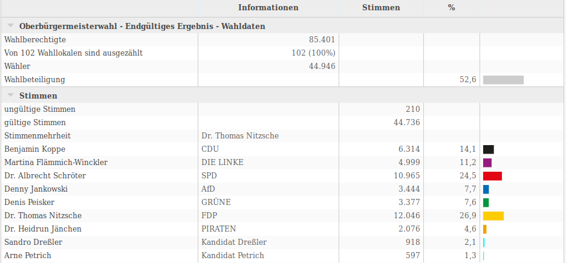
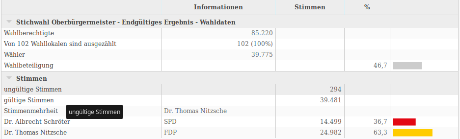

Jena hat jetzt einen FDP-Bürgermeister und alles wird besser.


Die Ergebnisse und Bilder stammen von der sogenannten "Statistikseite" der Stadt Jena.
Wenn man schon eine Weile in Jena lebt, wundert man sich evtl. über das Ergebnis. Dass unser lieber Schröter nach 12 Jahren abgewählt wurde, auch noch zugunsten eines FDP-Kandidaten, war schon überraschend. Mal sehen, ob es rechnerisch möglich ist, Hinweise auf den Sinneswandel der Bürger zu erhalten.
Die Zahlen pro Wahlkreis sind GEOJSON kodiert. Ein Python-Skript hohlt die Daten aus dem Netz und konvertiert das json-Zeug in einen pandas DataFrame. Das ist einfach ne Tabelle mit recht praktischen Funktionen zum Rechnen, Filtern und Anzeigen.
from collections import OrderedDict
import math
import pandas as pd
import numpy as np
from tools.data import *
from tools.geodata import *
Hier wird die Tabelle des ersten Wahlgangs geladen:
bm1 = load_pandas_bmwahl("bm01")
bm1.head(5) # zeigt die ersten 5 Zeilen
| Wahlberechtigte | Wähler | ungültige Stimmen | gültige Stimmen | Benjamin Koppe | Martina Flämmich-Winckler | Dr. Albrecht Schröter | Denny Jankowski | Denis Peisker | Dr. Thomas Nitzsche | Dr. Heidrun Jänchen | Sandro Dreßler | Arne Petrich | |
|---|---|---|---|---|---|---|---|---|---|---|---|---|---|
| Bezirk | |||||||||||||
| 001 Dezernat Stadtentwicklung | 1685 | 615 | 5 | 610 | 78 | 112 | 157 | 26 | 81 | 86 | 56 | 7 | 7 |
| 002 WE Catering / Raum OG | 1144 | 540 | 3 | 537 | 66 | 73 | 182 | 19 | 73 | 88 | 29 | 5 | 2 |
| 003 Nordschule / Raum 00_03 | 777 | 272 | 2 | 270 | 31 | 39 | 70 | 20 | 41 | 45 | 16 | 7 | 1 |
| 004 WE Catering / Raum EG | 1682 | 785 | 1 | 784 | 97 | 92 | 221 | 29 | 130 | 150 | 49 | 6 | 10 |
| 005 Volksbad-Anbau | 1543 | 612 | 1 | 611 | 98 | 62 | 179 | 28 | 77 | 111 | 38 | 15 | 3 |
Um zu Prüfen, dass alles korrekt ist, vergleichen wir die akkumulierten Zahlen mit den Offiziellen von der Webseite.
bm1.sum()
Wahlberechtigte 85401 Wähler 44946 ungültige Stimmen 210 gültige Stimmen 44736 Benjamin Koppe 6314 Martina Flämmich-Winckler 4999 Dr. Albrecht Schröter 10965 Denny Jankowski 3444 Denis Peisker 3377 Dr. Thomas Nitzsche 12046 Dr. Heidrun Jänchen 2076 Sandro Dreßler 918 Arne Petrich 597 dtype: int64
Passt. Und die Tabelle zur Stichwahl:
bm2 = load_pandas_bmwahl("bm02")
bm2.sum()
Wahlberechtigte 85220 Wähler 39775 ungültige Stimmen 294 gültige Stimmen 39481 Dr. Albrecht Schröter 14499 Dr. Thomas Nitzsche 24982 dtype: int64
Zur besseren Übersicht in den Tabellen werden die Spalten erstmal umbenannt:
bm1 = rename_bmwahl(bm1)
bm2 = rename_bmwahl(bm2)
bm1.head(3)
| n | nw | nu | ng | CDU | LINKE | SPD | AFD | GRÜNE | FDP | πRATEN | SANDRO | ARNE | |
|---|---|---|---|---|---|---|---|---|---|---|---|---|---|
| Bezirk | |||||||||||||
| 001 Dezernat Stadtentwicklung | 1685 | 615 | 5 | 610 | 78 | 112 | 157 | 26 | 81 | 86 | 56 | 7 | 7 |
| 002 WE Catering / Raum OG | 1144 | 540 | 3 | 537 | 66 | 73 | 182 | 19 | 73 | 88 | 29 | 5 | 2 |
| 003 Nordschule / Raum 00_03 | 777 | 272 | 2 | 270 | 31 | 39 | 70 | 20 | 41 | 45 | 16 | 7 | 1 |
n = Anzahl Wahlberechtigte, nw = Anzahl Wähler, nu = Anzahl ungültige Stimmen und ng = Anzahl gültige Stimmen.
Es ist vielleicht nicht ganz fair, Bürgermeisterkandidaten in Parteien umzubenennen. In kleinen Kommunen ist die Parteizugehörigkeit evtl. nicht so entscheidend. Aber wenn man nicht in Jena wohnt, und somit die ganze Zeit den Wahlwerbeplakaten ausgesetzt ist, kann man mit den bürgerlichen Namen wahrscheinlich nicht so viel anfangen.
Schauen wir ans Ende der Tabelle, fallen die Briefwahlbezirke auf.
bm1.tail(20)
| n | nw | nu | ng | CDU | LINKE | SPD | AFD | GRÜNE | FDP | πRATEN | SANDRO | ARNE | |
|---|---|---|---|---|---|---|---|---|---|---|---|---|---|
| Bezirk | |||||||||||||
| 083 Feuerwehrgerätehaus Vierzehnheiligen | 88 | 52 | 0 | 52 | 15 | 3 | 6 | 3 | 2 | 19 | 1 | 3 | 0 |
| 084 Feuerwehrgerätehaus Krippendorf | 96 | 58 | 0 | 58 | 4 | 2 | 23 | 14 | 0 | 9 | 3 | 3 | 0 |
| 085 Vereinshaus Lützeroda | 140 | 84 | 1 | 83 | 21 | 14 | 22 | 6 | 5 | 14 | 1 | 0 | 0 |
| 086 Gemeindebüro Cospeda | 1128 | 580 | 2 | 578 | 83 | 46 | 144 | 45 | 26 | 196 | 29 | 7 | 2 |
| 087 Feuerwehrgerätehaus Closewitz | 112 | 76 | 0 | 76 | 34 | 0 | 8 | 8 | 3 | 19 | 4 | 0 | 0 |
| Briefwahlbezirk 01 | 0 | 430 | 0 | 430 | 55 | 41 | 109 | 33 | 35 | 121 | 22 | 9 | 5 |
| Briefwahlbezirk 02 | 0 | 568 | 3 | 565 | 88 | 85 | 148 | 16 | 69 | 113 | 35 | 3 | 8 |
| Briefwahlbezirk 03 | 0 | 586 | 0 | 586 | 75 | 53 | 153 | 31 | 44 | 181 | 37 | 4 | 8 |
| Briefwahlbezirk 04 | 0 | 514 | 2 | 512 | 74 | 59 | 139 | 31 | 36 | 134 | 24 | 6 | 9 |
| Briefwahlbezirk 05 | 0 | 721 | 2 | 719 | 126 | 73 | 177 | 25 | 75 | 197 | 34 | 7 | 5 |
| Briefwahlbezirk 06 | 0 | 630 | 2 | 628 | 97 | 70 | 181 | 21 | 77 | 123 | 40 | 13 | 6 |
| Briefwahlbezirk 07 | 0 | 406 | 0 | 406 | 70 | 32 | 84 | 27 | 22 | 129 | 31 | 8 | 3 |
| Briefwahlbezirk 08 | 0 | 393 | 0 | 393 | 63 | 33 | 81 | 22 | 9 | 156 | 18 | 8 | 3 |
| Briefwahlbezirk 09 | 0 | 713 | 1 | 712 | 104 | 94 | 192 | 43 | 35 | 182 | 31 | 26 | 5 |
| Briefwahlbezirk 10 | 0 | 592 | 1 | 591 | 79 | 109 | 133 | 61 | 22 | 133 | 19 | 26 | 9 |
| Briefwahlbezirk 11 | 0 | 639 | 2 | 637 | 102 | 113 | 154 | 43 | 23 | 156 | 20 | 10 | 16 |
| Briefwahlbezirk 12 | 0 | 526 | 1 | 525 | 70 | 29 | 160 | 20 | 36 | 170 | 25 | 11 | 4 |
| Briefwahlbezirk 13 | 0 | 579 | 0 | 579 | 95 | 35 | 157 | 40 | 25 | 192 | 22 | 11 | 2 |
| Briefwahlbezirk 14 | 0 | 588 | 0 | 588 | 90 | 47 | 139 | 45 | 43 | 184 | 23 | 7 | 10 |
| Briefwahlbezirk 15 | 0 | 507 | 3 | 504 | 55 | 53 | 127 | 34 | 35 | 165 | 20 | 5 | 10 |
Die möchte ich gern erstmal entfernen und später separat betrachten. Dazu werden alle Spalten gefiltert in denen die Anzahl der Wähler gleich 0 ist (typisch für Briefwahlbezirke in allen Wahlstatistiken).
# Urnenwahlergebnisse (Wahlberechtigte ungleich 0)
bm1_urne = bm1[bm1["n"] != 0]
bm2_urne = bm2[bm2["n"] != 0]
# Briefwahlergebnisse (Wahlberechtigte gleich 0)
bm1_brief = bm1[bm1["n"] == 0]
bm2_brief = bm2[bm2["n"] == 0]
bm1_urne.tail(5)
| n | nw | nu | ng | CDU | LINKE | SPD | AFD | GRÜNE | FDP | πRATEN | SANDRO | ARNE | |
|---|---|---|---|---|---|---|---|---|---|---|---|---|---|
| Bezirk | |||||||||||||
| 083 Feuerwehrgerätehaus Vierzehnheiligen | 88 | 52 | 0 | 52 | 15 | 3 | 6 | 3 | 2 | 19 | 1 | 3 | 0 |
| 084 Feuerwehrgerätehaus Krippendorf | 96 | 58 | 0 | 58 | 4 | 2 | 23 | 14 | 0 | 9 | 3 | 3 | 0 |
| 085 Vereinshaus Lützeroda | 140 | 84 | 1 | 83 | 21 | 14 | 22 | 6 | 5 | 14 | 1 | 0 | 0 |
| 086 Gemeindebüro Cospeda | 1128 | 580 | 2 | 578 | 83 | 46 | 144 | 45 | 26 | 196 | 29 | 7 | 2 |
| 087 Feuerwehrgerätehaus Closewitz | 112 | 76 | 0 | 76 | 34 | 0 | 8 | 8 | 3 | 19 | 4 | 0 | 0 |
Hier die Summen der Urnen- und Briefwahl im Vergleich:
dic = OrderedDict()
dic["Urne"] = bm1_urne.sum()
dic["Brief"] = bm1_brief.sum()
dic["Brief %"] = bm1_brief.sum() / bm1_urne.sum() * 100
pd.DataFrame(dic).round(2)
| Urne | Brief | Brief % | |
|---|---|---|---|
| n | 85401 | 0 | 0.00 |
| nw | 36554 | 8392 | 22.96 |
| nu | 193 | 17 | 8.81 |
| ng | 36361 | 8375 | 23.03 |
| CDU | 5071 | 1243 | 24.51 |
| LINKE | 4073 | 926 | 22.74 |
| SPD | 8831 | 2134 | 24.16 |
| AFD | 2952 | 492 | 16.67 |
| GRÜNE | 2791 | 586 | 21.00 |
| FDP | 9710 | 2336 | 24.06 |
| πRATEN | 1675 | 401 | 23.94 |
| SANDRO | 764 | 154 | 20.16 |
| ARNE | 494 | 103 | 20.85 |
Mich interessiert jetzt natürlich vor Allem die Entwicklung der Wahlergebnisse von Albrecht Schröter (SPD) und Thomas Nitzsche (FDP) zwischen erstem und zweitem Wahlgang, deshalb füge ich noch ein paar errechnete Werte in die Tabelle ein:
def enrich_dataframe(bm1, bm2):
# Ergebnisse 1. Wahlgang
spd1 = bm1["SPD"]
fdp1 = bm1["FDP"]
# Ergebnisse Stichwahl
spd2 = bm2["SPD"]
fdp2 = bm2["FDP"]
df = bm1.copy()
# Speichere die Ergebnis der Stichwahl
df["SPD2"] = spd2
df["FDP2"] = fdp2
# Stimmen-Entwicklung von 1. zu 2. Wahl
df["SPD+"] = spd2 - spd1
df["FDP+"] = fdp2 - fdp1
# Vorsprung FDP vor SPD, jeweils 1. und 2. Wahl
df["FDP1>"] = fdp1 - spd1
df["FDP2>"] = fdp2 - spd2
# Entwicklung des Vorsprungs der FDP vor SPD, von 1. zu 2. Wahl
df["FDP>+"] = (fdp2 - spd2) - (fdp1 - spd1)
return df
df = enrich_dataframe(bm1_urne, bm2_urne)
df.tail()
| n | nw | nu | ng | CDU | LINKE | SPD | AFD | GRÜNE | FDP | πRATEN | SANDRO | ARNE | SPD2 | FDP2 | SPD+ | FDP+ | FDP1> | FDP2> | FDP>+ | |
|---|---|---|---|---|---|---|---|---|---|---|---|---|---|---|---|---|---|---|---|---|
| Bezirk | ||||||||||||||||||||
| 083 Feuerwehrgerätehaus Vierzehnheiligen | 88 | 52 | 0 | 52 | 15 | 3 | 6 | 3 | 2 | 19 | 1 | 3 | 0 | 8 | 42 | 2 | 23 | 13 | 34 | 21 |
| 084 Feuerwehrgerätehaus Krippendorf | 96 | 58 | 0 | 58 | 4 | 2 | 23 | 14 | 0 | 9 | 3 | 3 | 0 | 23 | 36 | 0 | 27 | -14 | 13 | 27 |
| 085 Vereinshaus Lützeroda | 140 | 84 | 1 | 83 | 21 | 14 | 22 | 6 | 5 | 14 | 1 | 0 | 0 | 27 | 48 | 5 | 34 | -8 | 21 | 29 |
| 086 Gemeindebüro Cospeda | 1128 | 580 | 2 | 578 | 83 | 46 | 144 | 45 | 26 | 196 | 29 | 7 | 2 | 148 | 306 | 4 | 110 | 52 | 158 | 106 |
| 087 Feuerwehrgerätehaus Closewitz | 112 | 76 | 0 | 76 | 34 | 0 | 8 | 8 | 3 | 19 | 4 | 0 | 0 | 8 | 59 | 0 | 40 | 11 | 51 | 40 |
Als nächstes werden die Wahlergebnisse in Prozent umgewandelt, um die Größe eines Wahlkreises zu egalisieren:
def calc_percent(bm):
df = bm.copy()
# Stimmen für Parteien in Prozent der gültigen Stimmen
for col in bm.columns[4:]:
df[col] = df[col] / df["ng"] * 100
# gültige und ungültige Stimmen in Prozent der Wähler
df["ng"] = df["ng"] / df["nw"] * 100
df["nu"] = df["nu"] / df["nw"] * 100
# Wähler in Prozent der Wahlberechtigten
if max(df["n"]):
df["nw"] = df["nw"] / df["n"] * 100
return df
dfp = calc_percent(df)
dfp.head().round(2)
| n | nw | nu | ng | CDU | LINKE | SPD | AFD | GRÜNE | FDP | πRATEN | SANDRO | ARNE | SPD2 | FDP2 | SPD+ | FDP+ | FDP1> | FDP2> | FDP>+ | |
|---|---|---|---|---|---|---|---|---|---|---|---|---|---|---|---|---|---|---|---|---|
| Bezirk | ||||||||||||||||||||
| 001 Dezernat Stadtentwicklung | 1685 | 36.50 | 0.81 | 99.19 | 12.79 | 18.36 | 25.74 | 4.26 | 13.28 | 14.10 | 9.18 | 1.15 | 1.15 | 37.05 | 33.93 | 11.31 | 19.84 | -11.64 | -3.11 | 8.52 |
| 002 WE Catering / Raum OG | 1144 | 47.20 | 0.56 | 99.44 | 12.29 | 13.59 | 33.89 | 3.54 | 13.59 | 16.39 | 5.40 | 0.93 | 0.37 | 43.39 | 32.03 | 9.50 | 15.64 | -17.50 | -11.36 | 6.15 |
| 003 Nordschule / Raum 00_03 | 777 | 35.01 | 0.74 | 99.26 | 11.48 | 14.44 | 25.93 | 7.41 | 15.19 | 16.67 | 5.93 | 2.59 | 0.37 | 37.78 | 35.19 | 11.85 | 18.52 | -9.26 | -2.59 | 6.67 |
| 004 WE Catering / Raum EG | 1682 | 46.67 | 0.13 | 99.87 | 12.37 | 11.73 | 28.19 | 3.70 | 16.58 | 19.13 | 6.25 | 0.77 | 1.28 | 39.41 | 32.91 | 11.22 | 13.78 | -9.06 | -6.51 | 2.55 |
| 005 Volksbad-Anbau | 1543 | 39.66 | 0.16 | 99.84 | 16.04 | 10.15 | 29.30 | 4.58 | 12.60 | 18.17 | 6.22 | 2.45 | 0.49 | 36.17 | 37.32 | 6.87 | 19.15 | -11.13 | 1.15 | 12.27 |
dfp.mean()
n 981.620690 nw 44.351009 nu 0.574870 ng 99.425130 CDU 14.745174 LINKE 11.139748 SPD 24.162081 AFD 9.022495 GRÜNE 6.904020 FDP 26.004642 πRATEN 4.322257 SANDRO 2.364029 ARNE 1.335556 SPD2 28.677370 FDP2 51.550047 SPD+ 4.515288 FDP+ 25.545405 FDP1> 1.842561 FDP2> 22.872677 FDP>+ 21.030117 dtype: float64
Soweit die harten Fakten! Die Briefwahlbezirke sind, wie gesagt, nicht in der Rechnung, aber die Tendenz ist dort ähnlich.
Im Folgenden sehen wir die Korrelation der einzelnen Spalten der Tabelle mit einander. Bei der gewählten Skala bedeutet 50 bis 100, "etwas" bis stark korrelierend und -50 bis -100 "etwas" bis stark anti-korrelierend. Eine hohe Korrelation zwischen zwei Parteien z.B. bedeutet, daß mehrere Wahlkreise in ihrem Verhalten ähnlich sind und entweder beide Parteien wählen oder beide Parteien nicht wählen. Eine Anti-korrelation sehen wir z.B. zwischen FDP und LINKE und zwischen GRÜNE und AFD. Wahlkreise die mehr grün wählten, wählten weniger blau, und umgedreht.
corr = dfp.corr() # zeige -1,1 als -100,100,
# wenn nicht in bereich -49,49
corr.apply(lambda s: s.apply(lambda v: int(v*100) if abs(v)>.5 else ""))
| n | nw | nu | ng | CDU | LINKE | SPD | AFD | GRÜNE | FDP | πRATEN | SANDRO | ARNE | SPD2 | FDP2 | SPD+ | FDP+ | FDP1> | FDP2> | FDP>+ | |
|---|---|---|---|---|---|---|---|---|---|---|---|---|---|---|---|---|---|---|---|---|
| n | 100 | -51 | -61 | -58 | ||||||||||||||||
| nw | 100 | -75 | ||||||||||||||||||
| nu | 100 | -100 | ||||||||||||||||||
| ng | -100 | 100 | ||||||||||||||||||
| CDU | 100 | 55 | 65 | 52 | 59 | |||||||||||||||
| LINKE | -75 | 100 | -59 | -59 | 65 | -55 | ||||||||||||||
| SPD | 100 | 71 | -51 | -80 | -62 | |||||||||||||||
| AFD | 100 | -66 | 60 | |||||||||||||||||
| GRÜNE | -66 | 100 | 50 | -67 | -60 | -63 | -60 | |||||||||||||
| FDP | -59 | 100 | -70 | 66 | 89 | 71 | ||||||||||||||
| πRATEN | 100 | |||||||||||||||||||
| SANDRO | 100 | |||||||||||||||||||
| ARNE | 100 | |||||||||||||||||||
| SPD2 | 71 | 50 | -70 | 100 | -80 | 62 | -82 | -92 | -60 | |||||||||||
| FDP2 | -51 | 55 | -59 | -51 | -67 | 66 | -80 | 100 | -56 | 70 | 70 | 96 | 80 | |||||||
| SPD+ | 65 | 62 | -56 | 100 | -61 | -69 | ||||||||||||||
| FDP+ | -61 | 65 | 60 | -60 | 70 | 100 | 61 | 88 | ||||||||||||
| FDP1> | -80 | 89 | -82 | 70 | 100 | 79 | ||||||||||||||
| FDP2> | 52 | -55 | -62 | -63 | 71 | -92 | 96 | -61 | 61 | 79 | 100 | 75 | ||||||||
| FDP>+ | -58 | 59 | -60 | -60 | 80 | -69 | 88 | 75 | 100 |
Übrigens liegen die Korrelationswerte eigentlich im Bereich -1, 1. Wenn man das Quadrat zieht, erhält man die Aufklärung der Varianz. In unserem Fall etwa: Wieviel Prozent der Wahlkreise sind für die Korrelation verantwortlich. z.B. korreliert (logischerweise) SPD2 und SPD mit 0.71. 0.71² ist etwa 0.5 oder 50%. D.h. 50% der Wähler in den Wahlkreisen, sind für die Korrelation verantwortlich, in diesem Fall etwa: Haben den Schröter auch im zweiten Wahlgang nicht gewählt. Mal kurz gezählt, in welchen Wahlkreisen die SPD stärker als die FDP war:
num_spd1 = sum(1 for i in range(bm1_urne.shape[0]) if bm1_urne["SPD"][i] > bm1_urne["FDP"][i])
num_spd2 = sum(1 for i in range(bm2_urne.shape[0]) if bm2_urne["SPD"][i] > bm2_urne["FDP"][i])
print("SPD Wahlkreise %s in der 1. Wahl, %s in der 2. Wahl, macht %s%%" % (
num_spd1, num_spd2, round(num_spd2 / num_spd1 * 100, 2)))
SPD Wahlkreise 35 in der 1. Wahl, 9 in der 2. Wahl, macht 25.71%
Interessant ist auch, daß die LINKE negativ mit der Anzahl der Wähler korrelliert, also je weniger Wahlbeteiligung desto stärker ist die LINKE - höö?
Warum war jetzt die FDP im zweiten Wahlgang so stark? Schauen wir womit der Zuwachs der FDP (FDP+) korreliert: CDU und AFD. Na super.
Wer hat die SPD im zweiten Wahlgang noch ein bisschen angeschoben (SPD+)? Die Linke. Und welche Wahlkreise haben dem Ausbau des FDP-Vorsprungs (FDP>+) entgegengewirkt, wenn auch nur marginal: Die grünen Wahlkreise.
Jetzt das selbe nochmal mit den Briefbezirken:
df = enrich_dataframe(bm1_brief, bm2_brief)
dfp = calc_percent(df)
dfp.corr().apply(lambda s: s.apply(lambda v: int(v*100) if abs(v)>.5 else ""))
| n | nw | nu | ng | CDU | LINKE | SPD | AFD | GRÜNE | FDP | πRATEN | SANDRO | ARNE | SPD2 | FDP2 | SPD+ | FDP+ | FDP1> | FDP2> | FDP>+ | |
|---|---|---|---|---|---|---|---|---|---|---|---|---|---|---|---|---|---|---|---|---|
| n | ||||||||||||||||||||
| nw | 100 | -54 | -60 | -56 | -58 | -62 | -59 | |||||||||||||
| nu | 100 | -100 | -51 | |||||||||||||||||
| ng | -100 | 100 | 51 | |||||||||||||||||
| CDU | 100 | |||||||||||||||||||
| LINKE | 100 | -71 | 58 | -70 | -58 | |||||||||||||||
| SPD | 100 | -65 | ||||||||||||||||||
| AFD | 100 | -66 | -50 | 53 | -61 | -53 | ||||||||||||||
| GRÜNE | -66 | 100 | -54 | 50 | 95 | 92 | -61 | -73 | -73 | |||||||||||
| FDP | -54 | -71 | -54 | 100 | -62 | 89 | -59 | 66 | 92 | 88 | 78 | |||||||||
| πRATEN | -50 | 50 | 100 | |||||||||||||||||
| SANDRO | 53 | 100 | ||||||||||||||||||
| ARNE | 58 | 100 | ||||||||||||||||||
| SPD2 | -61 | 95 | -62 | 100 | 96 | -69 | -84 | -84 | ||||||||||||
| FDP2 | -60 | -70 | 89 | 100 | 93 | 82 | 87 | 81 | ||||||||||||
| SPD+ | -53 | 92 | -59 | 96 | 100 | -57 | -80 | -85 | ||||||||||||
| FDP+ | -56 | -58 | 66 | 93 | 100 | 60 | 72 | 71 | ||||||||||||
| FDP1> | -58 | -51 | 51 | -65 | -61 | 92 | -69 | 82 | -57 | 60 | 100 | 88 | 73 | |||||||
| FDP2> | -62 | -73 | 88 | -84 | 87 | -80 | 72 | 88 | 100 | 96 | ||||||||||
| FDP>+ | -59 | -73 | 78 | -84 | 81 | -85 | 71 | 73 | 96 | 100 |
Soso, Sandro Dreßler korreliert mit der AFD, Arne Petrich mit der Linken und die Piraten mit den Grünen.
Jetzt hat auch die FDP den Außenseiterbonus: negative Korrelation mit der Anzahl der Stimmen.